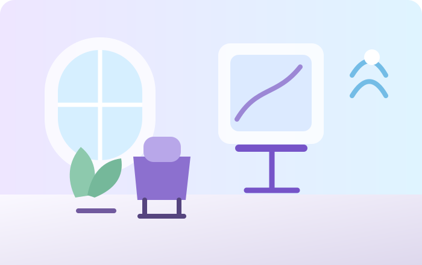

先理解，再設計
認真聆聽你的習慣與期待，讓造型從溝通出發。
A LITTLE ABOUT US
讓理髮，照到你自己。
從一場真誠的對話，開始認識理想中的樣子。
OUR STORY
01 / 03每個人都曾有過想換個樣子的時候。紫藍的顏希望把理髮變成一段自在的體驗：先好好聽你說，再一起找出適合你的方向。
我們以「讓理髮，照到你自己」為品牌初心，陪伴每一次整理、嘗試與改變。這份故事文案為示範內容，品牌成立年份與實際經歷待確認。
WHAT WE BELIEVE
認真聆聽你的習慣與期待，讓造型從溝通出發。
在每個步驟保有耐心，讓體驗保持自在而清楚。
不追逐單一標準，找到你自己也喜歡的模樣。

COME SAY HELLO